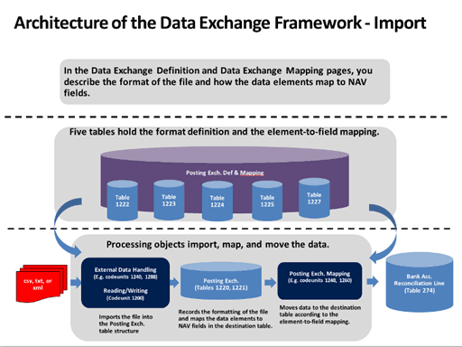
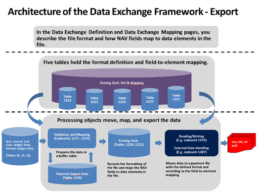

Über das Datenaustauschframework
Sie können das Datenaustauschframework verwenden, um den Austausch von Geschäftsbelegen, Bankdateien, Währungswechselkursen und sämtlichen anderen Datendateien mit Ihren Geschäftspartnern oder Behörden zu verwalten.
Als Administrator oder Microsoft-Partner können Sie das Framework in neuen Integrationsfunktionen verwenden, indem Sie festlegen, welche Daten ausgetauscht werden sollen und wie. Beispielsweise das Format von Dateien zum Austausch von Daten in den Bankdateien, von elektronischen Dokumenten, von Währungswechselkursen und anderen mit ERP-Systemen variieren abhängig vom Anbieter der Datendatei oder des Streams und von Land/Region. Business Central unterstützt verschiedene Bankdateiformate und Datendienststandards. Um Unterstützung für andere elektronische Belegformate zu bieten, verwenden Sie das Datenaustauschframework.
Die folgenden Diagramme zeigen die Architektur des Daten-Exchange-Frameworks an.


Elektronische Belege
Als Alternative zum Versand von geschäftlichen Belegen als Dateianhang per E-Mail können Sie diese auch elektronisch versenden und empfangen. Ein „elektronischer Beleg“ ist eine standardkonforme Datei, die ein Geschäftsdokument darstellt, z.B. eine Rechnung eines Kreditors, die Sie empfangen und in eine Einkaufsrechnung in Business Central umwandeln können. Handelspartner tauschen elektronische Belege über externe Document Exchange Services aus. Standardmäßig unterstützt Business Central den Versand und Empfang elektronischer Rechnungen und Gutschriften im PEPPOL-Format, das von den größten Anbietern von Dokumentenaustauschdiensten unterstützt wird. Ein großer Anbieter von Document Exchange Services, Tradeshift, ist bereits vorkonfiguriert und kann für Ihre Firma eingerichtet werden. Um die Unterstützung anderer elektronischer Belege zu ermöglichen, müssen Sie neue Datenaustauschdefinitionen erstellen.
Mithilfe eines externen OCR-Dienstes (optische Zeichenerkennung) können Sie aus PDF- oder Bilddateien, die die eingehenden Belege darstellen, elektronische Belege erstellen, die Sie dann in Business Central in Belegdatensätze konvertieren können, wie Sie es für elektronische PEPPOL-Belege tun. Wenn Sie beispielsweise eine Rechnung in PDF-Format von Ihrem Kreditor erhalten, können Sie diese über die Seiter Eingehende Belege zum OCR-Dienst senden. Nach einigen Sekunden erhalten Sie die Datei als elektronische Rechnung zurück, die zu einer Einkaufsrechnung für den Kreditor umgewandelt werden kann. Wenn Sie die Datei per E-Mail an den OCR-Service senden, wird automatisch ein neuer eingehender Beleg erstellt, wenn Sie den elektronischen Belegs zurückerhalten.
Um beispielsweise Verkaufsrechnungen als elektronischer PEPPOL-Beleg zu senden, wählen Sie die Option Elektronisches Dokument im Buchen und senden-Dialogfeld aus. Dort können Sie außerdem das standardmäßige Belegsendeprofil für den Kunden einrichten. Zuerst müssen Sie verschiedene Stammdaten einrichten, zum Beispiel Mandantendaten, Debitoren, Artikel und Einheiten. Diese werden verwendet, um die Geschäftspartner und Artikel zu identifizieren, wenn Sie Daten in Feldern in Business Central in Elemente in der ausgehenden Belegdatei umwandeln. Die Datenkonvertierung und das Senden der PEPPOL-Verkaufsrechnung werden durch dedizierte Codeunits und XMLports ausgeführt, die im elektronischen Belegformat PEPPOL dargestellt werden.
Um beispielsweise eine Rechnung von einem Kreditor in Form eines elektronischen PEPPOL-Belegs zu erhalten, verarbeiten Sie den Beleg auf der Seite Eingehende Belege, um ihn in eine Einkaufsrechnung in Business Central zu konvertieren. Sie können entweder die Auftragswarteschlange zur regelmäßigen Verarbeitung solcher Dateien einrichten, oder Sie können den Vorgang manuell starten. Zuerst müssen Sie verschiedene Stammdaten einrichten, zum Beispiel Mandantendaten, Kreditoren, Artikel und Einheiten. Diese werden verwendet, um Geschäftspartner und Artikel zu identifizieren, wenn Daten in Elementen im eingehenden Beleg zu Feldern in Business Central konvertiert werden. Der Empfang und die Datenkonvertierung von PEPPOL-Rechnungen erfolgen über das Datenaustauschframework, das durch die Datenaustauschdefinition PEPPOL - Rechnung dargestellt wird.
Um zum Beispiel eine Rechnung als elektronischer OCR-Beleg zu empfangen, verarbeiten Sie diese genauso wie beim Empfang eines elektronischen PEPPOL-Belegs. Der Empfang und die Konvertierung von elektronischen Belegen von OCR wird über das Datenaustauschframework durchgeführt, das durch die Datenaustauschdefinition OCR - Rechnung dargestellt wird.
Bankdateien
Die Formate der Dateien für den Austausch von Bankdaten mit betriebswirtschaftlichen Anwendungen variieren je nach Anbieter der Datei und Land oder Region. Business Central unterstützt den Import und Export von Bankdateien für den einheitlichen Euro-Zahlungsverkehrsraum (SEPA). Außerdem können Sie mit der Erweiterung AMC Banking 365 Fundamentals eine Verbindung zu einer Erweiterung AMC Banking 365 Fundamentals herstellen, die von einem externen Anbieter, AMC Consult, bereitgestellt wird. Weitere Informationen finden Sie unter Zahlungen mit der AMC Banking 365 Fundamentals-Erweiterung oder SEPA-Überweisung vornehmen. Um Unterstützung für andere elektronische Belegformate zu bieten, verwenden Sie das Datenaustauschframework.
Um SEPA-Gutschriftübertragungen zu exportieren, wählen Sie die Schaltfläche Zahlungen in Datei exportieren auf der Seite Zahlungs-Buch-Blatt. aus und laden die Datei dann hoch, um die Zahlungen bei Ihrer Bank in Auftrag zu geben. Zuerst müssen Sie verschiedene Stammdaten einrichten, wie Bankkonto, Kreditoren und Zahlungsformen. Die Datenkonvertierung und der Export von SEPA-Bankdaten erfolgen durch eine dedizierte Codeunit und XMLport, die durch das Bank-Export-/Import-Setup SEPA-Kreditübertragung dargestellt werden. Alternativ können Sie die AMC Banking 365 Fundamentals-Erweiterung für den Export einrichten, dargestellt durch die AMC Banking 365 Fundamentals-Erweiterung – Kreditübertragung Datenaustauschdefinition.
Um SEPA-Lastschriften zu exportieren, wählen Sie die Schaltfläche Lastschriftdatei exportieren auf der Seite Lastschrift aus und senden die Datei dann zu Ihrer Bank, damit die entsprechenden Debitorenzahlungen automatisch erfasst werden. Zuerst müssen Sie Bankkonten, Debitoren, Lastschrift-Mandage und Zahlungsformen einrichten. Die Datenkonvertierung und der Export von SEPA-Bankdaten erfolgt durch eine dedizierte Codeunit und XMLport, die durch das Bank-Export-/Import-Setup SEPA-Lastschrift dargestellt werden.
Um SEPA-Bankauszüge zu importieren, wählen Sie die Schaltfläche "Bankauszug importieren" in den Fenstern Zahlungsabstimmungsbuch.-Blatt und Bankkonto-Abstimmung aus. Gleichen Sie dann die einzelnen Bankkontoauszugsposten manuell oder automatisch mit Zahlungen der Bankposten aus. Zuerst müssen Sie Bankkonten einrichten. Der Import und die Datenkonvertierung von SEPA-Bankdaten erfolgen über das Datenaustauschframework, das durch die Datenaustauschdefinition SEPA CAMT dargestellt wird. Alternativ können Sie die AMC Banking 365 Fundamentals-Erweiterung für den Import einrichten, dargestellt durch die AMC Banking 365 Fundamentals-Erweiterung – Bankauszug Datenaustauschdefinition.
Darüber hinaus unterstützen die lokalen Versionen von Business Central verschiedene andere Dateiformate für den Import und Export von Bankdaten, Lohnabrechnungen und anderen Daten. Weitere Informationen finden Sie auf der Landing Page Lokale Funktionalität für Ihr Land/Ihre Region in der Hilfe.
Währungswechselkurse
Sie können einen externen Service einrichten, um Ihre Währungswechselkurses auf dem neuesten Stand zu halten. Der Service, der aktualisierte Währungswechselkurses bereitstellt, wird durch eine Datenaustauschdefinition aktiviert. Entsprechend wird die Wechselkursaktualisierungskarte einrichten Seite eine verkürzte Darstellungsform des Fensters Datenaustauschdefinition für die entsprechenden Datenaustauschdefinition.
Für den gesamten Austausch von Daten in XML-Dateien können Sie die Einrichtung des Datenaustausches vorbereiten, indem Sie die zugehörige XML-Schemadatei auf die Seite laden. Hier wählen Sie die Datenelemente aus, die Sie mit Business Central austauschen möchten, und dann initialisieren Sie entweder eine Datenaustauschdefinition oder generieren einen XMLport.
Intrastat
Business Central verwendet das Datenaustausch-Framework für Intrastat-Berichte, wo Sie auf einfache Weise Zeitstempeldateien in verschiedenen Formaten für den Export erstellen können. Business Central enthält vorbereitete Formate für lokalisierte Länder/Regionen und für die Standardversion. Sie können den Standardbericht jedoch ändern oder einen eigenen erstellen.
Siehe auch
Daten elektronisch austauschen
XML-Schemas verwenden, um Datenaustauschdefinitionen vorzubereiten
Datenaustausch einrichten
Eingehende Belege
Allgemeine Geschäftsfunktionen
Kostenlose E-Learning-Module für Business Central finden Sie hier